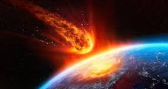

METEORO
Um meteoro é um fenômeno astronômico que ocorre quando fragmentos de rochas espaciais, como cometas
ou asteroides,
entram na atmosfera de um planeta.
Eles são caracterizados por sua
diversidade de formas e densidades, geralmente apresentando formatos irregulares e alta densidade.
CURIOSIDADES
O QUE É UM?
Os meteoros são fenômenos luminosos causados pela entrada de partículas espaciais na atmosfera terrestre, originárias de cometas e asteroides. Ao atravessar a atmosfera, essas partículas queimam e produzem um rastro brilhante no céu. Diferentemente dos cometas e asteroides, que são corpos celestes que orbitam o Sistema Solar, os meteoros são apenas o efeito visível da passagem de fragmentos na Terra.
COMO METEORO É FORMADO?
A formação de um meteoro está relacionada à fragmentação de corpos celestes, especialmente cometas e asteroides. Esses fragmentos, compostos pelos mesmos elementos que formam outros corpos celestes, entram na atmosfera terrestre e geram o fenômeno luminoso conhecido como meteoro.
rochas; minerais; metais.
CARACTERÍSTICAS
Os meteoros possuem características diversas e distintas, especialmente atreladas à sua composição química e física, com destaque para elementos de ordem mineral e metálica. Essas rochas espaciais apresentam:
formatos irregulares, geralmente com bordas arredondadas;
várias marcas ao longo da sua superfície.
Esses corpos celestes são muitos pesados e bastante densos. Os meteoros que atingem a superfície terrestre, os chamados meteoritos, em geral apresentam dimensões diminutas e confundem-se com fragmentos de rochas terrestres.
TIPOS DE METEOROS
Os meteoros são comumente classificados conforme a sua formação, ou seja, os materiais que compõem essas rochas espaciais. Sendo assim, há três tipos clássicos:
Metálicos: Esses meteoros são formados principalmente por minerais metálicos, com destaque para ferro e níquel.
Rochosos: Os meteoros rochosos são formados basicamente por minerais não metálicos. São majoritariamente constituídos por silicatos.
Mistos: O tipo misto se refere ao meteoro composto por minerais metálicos e não metálicos.
CHUVAS DE METEOROS
As chuvas de meteoros são fenômenos espaciais caracterizados pelo grande volume de meteoros que atingem a atmosfera terrestre com temporalidade e espacialidade específicas. O fenômeno é provocado, portanto, pela entrada de meteoroides na atmosfera.
MATERIAL DE ESTUDO
VIDEO AULA
MAPA MENTAL